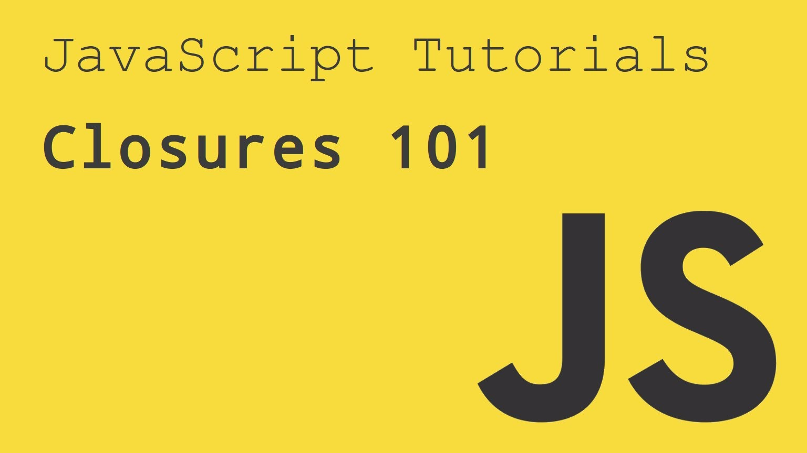
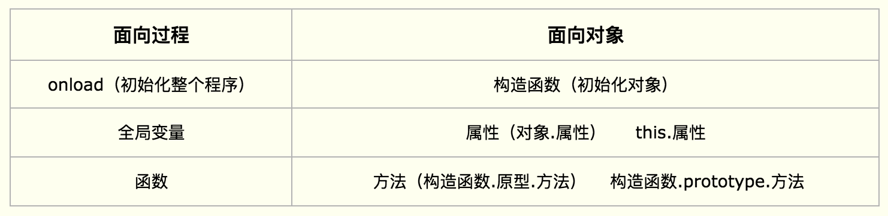

闭包实际上是一种函数，所以闭包技术也是函数技术的一种；闭包能做的事情函数几乎都能做。
闭包技术花式比较多，用法也比较灵活，一般开发人员在学习闭包的时候都会遇到瓶颈，主要是因为闭包技术的分界线并不明显。几乎无法用一个特点去区分。
当一个内部函数被其外部函数之外的变量引用时，就形成了一个闭包。
function A(){
function B(){
console.log("Hello XMG!");
}
return B;
}
var b = A();
b();//Hello XMG!
闭包的最大用处有两个：一个是可以读取函数内部的变量，另一个就是让这些变量的值始终保持在内存中。

JavaScript的GC机制
封闭作用域
基本结构：
(function(){})();
;(function(){})();
+(function(){})();
-(function(){})();
？(function(){})();
技术优点：
不污染全局空间！
内部所有的临时变量执行完毕都会释放不占内存。
可以保存全局数据。
更新复杂变量。
嵌套之间的函数会形成作用域链，每次对变量的访问实际上都是对整条作用域链的遍历查找。先查找最近的作用域，最后再查找全局作用域。如果在某个作用域找到了对量就会结束本次查找过程。
思考？
变量的生命周期 任何一个变量在内存中都是一个引用，这个变量是有自己的生命周期。周期结束意味着被销毁。 一个变量在它当前的作用域内被声明那一刻相当于变量出生，整个当前作用域执行完毕并退出作用域相当于变量的寿命终止。
保存作用域是一种更高级的闭包技术，如果函数嵌套函数，那么内部的那个函数将形成作用域闭包。简单的说，这种闭包能够达到的好处就是让指令能够绑定一些全局数据去运行；
基本结构：
var A=function(){
return function(){};
}
优点：
全局数据隐藏化
可以让某个指令运行时候绑定一些隐藏的全局数据在身上。
对象是什么？
对象就是带有属性和方法的数据类型！
任何一门高级语言都要面向对象，JavaScript则是基于原型的面向对象语言，因此，我们的思维要由面向过程转向面向对象：

面向对象：
面向对象里面：类和对象
类是对象的抽象，而对象是类的具体实例
一切事物皆对象 JavaScript 一切皆对象
类 和 对象
对象 女朋友
小白 你有对象了吗？ 泛指 女朋友
昨天陪你打LOL的那个女生是你对象吗？ 特指 某一个女朋友
在座的有喜欢吃香蕉的吗？
你手中那根香蕉熟了吗？ 特指对象（具体的实例）
面向对象的特性：
抽象
封装
继承
多态
所有的构造函数有一个特点：首字母大写；
在js中我们可以理解为只要执行以后能够返回新的对象的函数就是构造函数。
构造函数技巧的最大目的：创造完全独立的对象，互相之间不影响。
将一个函数变成对象并返回
在这个函数的内部将this指向函数本身。
new这个关键词实际上能够将任何函数直接变成一个对象。它只有在和构造函数配合的时候才有用，它相当于可以化简构造函数自己创造对象和返回对象的步骤。
在任何一个对象中都有构造器和原型属性，包括原生的对象，比如： Date, Array等；
constructor 返回对创建此对象的 构造函数的引用
prototype 让我们有能力向对象添加属性和方法
prototype它的作用就是构造函数的一个共享库；在这个共享库里面存储的所有数据将来都会被所有的新对象公用。 这样大大降低了创建方法的成本。
原型共享库是谁使用的？
原型的工作原理？
第一：自动将原型库中的所有内容都放在将来的对象身上；
第二：如果共享库中的内容发生变化会自动更新所有对象上的数据。
注意：
在面向对象的写法当中，原型的共享库里面所有的方法中的this默认情况都会指向将来的对象。
只有在两个情况会发生变化，那么这两个情况一定要检查作用域：
第一：如果在事件的作用域中，this的指向会变成事件源。
第二：如果在定时器的作用域中，this的指向会变成window。